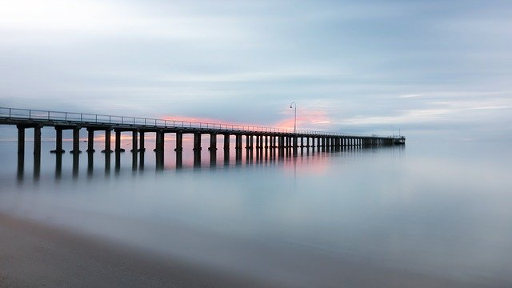

Positionnement: relative et absolute
Utilisation de la position relative et de la postion absolute pour bien placer une légende
Position relative

Coucher de soleil
Position absolute
Coucher de soleil